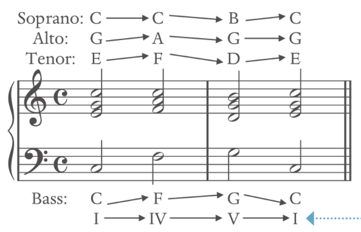
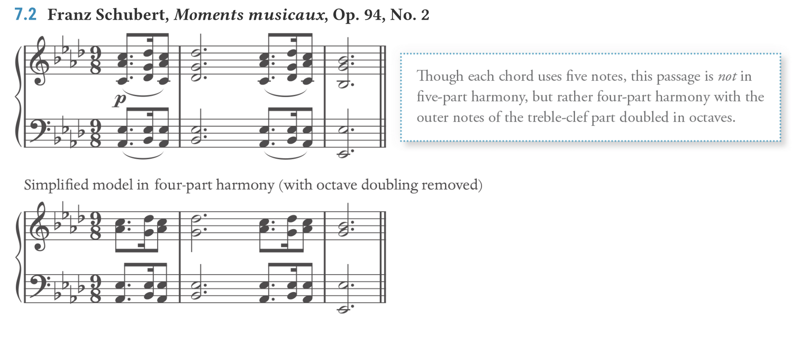
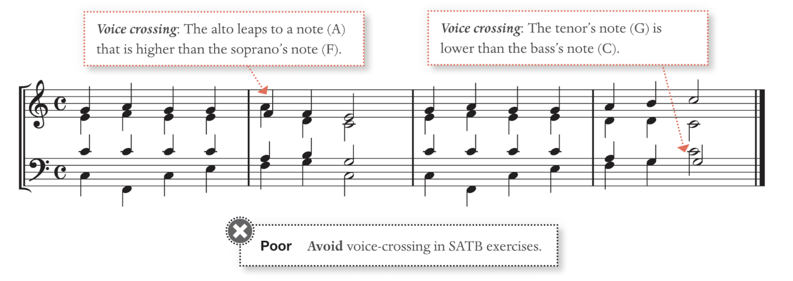
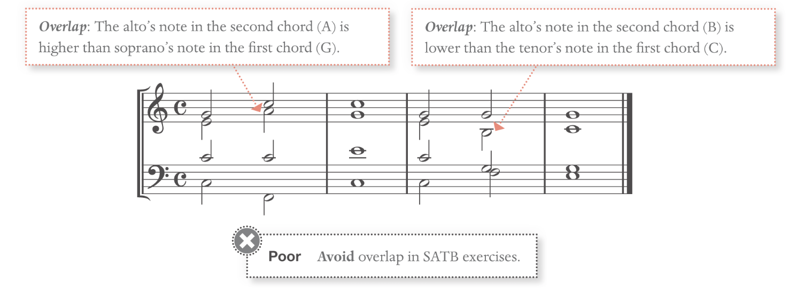

Harmony Rules
Harmony Rules Link to heading
==Do not raise the leading tone when it’s not part of a dominant function**== Melodic interval (when written horizontally): ==not M7, m7 as melodic interval**== ==Avoid tritone**== ==no dim or aug intervals**==
From one chord to the other is called harmonic progression or chord progression.

Voice Leading refers to each line within the chord progression. Tendency tone refer to notes that require special treatment
Some common Rules Link to heading
Leaps between Chord: the max leap is a distance of perfect fourth, do not leap toward a dissonance.
Sustained chord leap: Same chord are free to jump over different inversions; Chord can jump to any of its inversions without restriction
The Seventh chord: cannot move to a triad, because the chordal seventh needs to resolve.
Figure bass: Do not add accidental unless stated in the figured bass
A complete T-S-D-T pattern chord includes all the notes from a scale in harmony
Tonic to Subdominant chord: should always move in a contrary motion to avoid parallel fifth or eighth
Chord Omit Rule: Link to heading
Seventh Chord: The fifth from any (root chord) seventh chord may be omitted, but never omit the third
Triad Chord: The fifth may always be omitted, always keep the third, it creates a hollow sound otherwise. (Or pure tonal in a piece)
Tendency Tone Link to heading
About Chordal Seventh Link to heading
The Chordal seventh could resolve in a different voice register
Do NOT downward melodic leap to Chordal seventh.
All chordal seventh need to resolve. It can stay on the same note and be resolved later.
About Minor 6̂ Link to heading
The 6̂ have a strong tendency to pull down to 5̂
Avoid doubling minor 6̂ in any cases
Minor 6̂ requires special treatment: can raise the 6̂ when ascending to avoid augmented 2nd if required.
After special treatment of 6̂, note their notation changes. e.g. iv6 turns into IV6
Note that when descending in a minor scale, the 6̂ and 7̂ do not need to be raised. (Especially in the outer voice)
Leading Tone Link to heading
In the inner voice of the major key, the 7̂ can go down to 6̂
In the inner voice of the minor key, the 7̂ must go to 1̂ to avoid augmented 2nd issue
The leading tone that does not act as dominant does not need to be raised.
Note that when descending in a minor scale, the 6̂ and 7̂ do not need to be raised. (Especially in the outer voice)
Applied leading tone (in applied chords) is also a leading tone. Treat it as such
Voice Leading Link to heading
The Outer Voice: Link to heading
Upper notes: Usually stayed the same or moved by step or leaping to third, never greater than sixth.
Bass notes: Bass can have many melodic leaps, but avoid greater than seventh/octaves.
Leaps: Link to heading
Avoid ascending leap (go up) greater than a third to the leading note
Chord skips: large leaps within the chord are acceptable.
Avoid Parallel: Link to heading
Avoid perfect interval unison/fifth/octaves in parallel motion: counteract the independence of the voice
Perfect fifth (P5) to diminished fifth (d5) is acceptable; Diminished fifth to perfect fifth is prohibited (except in some special cases)
V^43^ or vii°^6^ with 3̂-4̂-5̂ melody is an exception
Avoid Perfect similar motion Link to heading
Avoid perfect interval fifth/unison/octaves in a similar motion
Avoid perfect interval of fifth/octaves applying in the outer voice (soprano and bass), unless the soprano moves by step. Other names: similar octave/fifth, hidden octave/fifth, direct octave/fifth
Perfect unison should NOT be approached in a similar motion Perfect octaves should NOT be approached in a similar motion from a dissonant second or seventh.
Treatment of tendency tones Link to heading
If the leading note (the 7th) is in an outer voice (soprano or bass), it must resolve to tonic if followed by a tonic chord, resolve up.
The chordal seventh must always resolve down.
The only exception is when the chordal seventh is repeated, which delayed it until the next chord came in: When chords are repeated, they are considered stationary motion.
When root doubled: Link to heading
In the special case where root double does not consider parallel: the fifth root is there to enrich the current four-part texture

Avoid Crossover and Overlap Link to heading
Voice Crossover: the voice of the lower voice is higher than the upper voice

Overlap: the lower voice note is higher than the previous upper voice note
